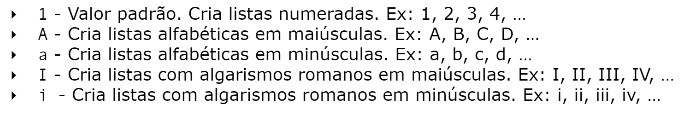
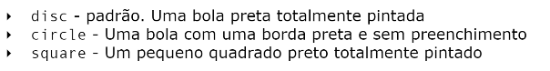

As ordered lists, ou listas ordenadas, são listas onde a ordem é algo importante, para criá-la, usamos a tag ol marcar a lista e a tag li para os itens. Veja a seguir
A tag ol tem parâmetro type onde configuramos o tipo de marcador de cada item, ou seja, o 1.; 2.; 3. que vimos na lista anterior. Veja as opções de valores para esse parâmetro
Também há o parâmetro start, para indicar o inicio desses marcadores. a tag <ol type="i" start= "5"> fará isso:
Começou do 5 e foi assim por diante.
As listas não ordenadas, como o nome diz, é em que a ordem não importa. Usamos a tag ul para ela
Vimos que nessa lista, não temos ordem, apenas essas bolinhas. Podemos alterar com o parâmetro ul, que volta nesse tipo de lista. A seguir alguns valores para o type
Podemos criar listas, dentro de outras listas, veja o exemplo a seguir:
Como se fosse um dicionário, esse tipo de lista tem os itens e descrições dela. Usamos a tag dl para marcar a lista, dt para os itens, dd para a descrição